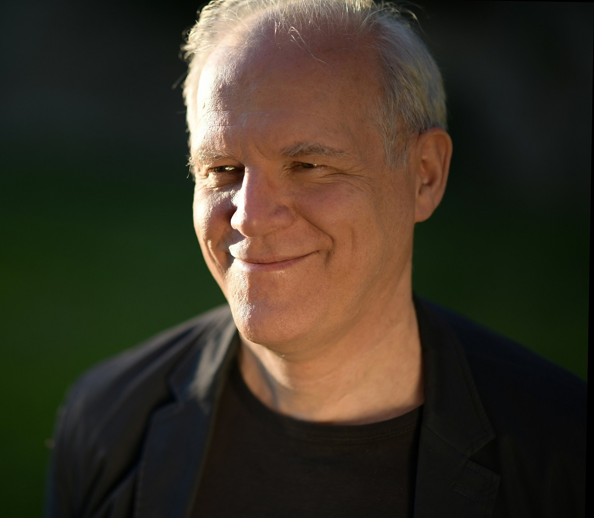

纪念 Jean-Pierre Demailly
这是由Jean-Pierre Demailly的中文纪念网页。
Jean-Pierre Demailly是一位伟大的数学家。
致辞:
我的博后导师，法国傅立叶研究所的数学家Demailly先生，于巴黎时间三月十七日因病离开了这个世界。昨日惊闻此噩耗，一时悲从中来，情难自已。还记得先生在新年来信中写到：“虽身患重病，然正在积极治疗，还打乒乓，还可以做数学…”。又三月忙乱倏忽而过，没想竟成诀别，此刻先生的音容宛在，却人天永隔。
先生在复分析，复几何，代数几何领域的卓越贡献与深远影响是人共瞩目的，非小子可以妄评。然而他与中国的不解之缘，应留下一书之地。先生一生中培养了多位中国学生，有的已经成为其领域中年轻一辈的领军人物。同时，先生利用博后与访问的资源帮助并支持过许多（包括我在内）中国的年轻数学工作者。他曾对我说，中国会在未来二十年内，成为数学最好的国家之一。此时回想起先生的谆谆教诲与殷切期望，每每让我汗颜。
先生习惯在每个工作日的午间，与学生们一起用餐与聊天。在数学之外，我们会聊到很多的内容，而这可能是我在法国生活，最为开心的时间。有位先生的弟子曾戏称，先生有三件事和中国人很像：爱打乒乓球，爱到处拍照，爱八卦。先生对本地的水资源非常自豪，他会向每一个初到的学生介绍，这里的自来水比瓶装矿泉水更为健康。
先生是一位著名的数学家，一位令人尊敬的老师，一位睿智的长者，一位温暖的朋友，一位拥有像金子一般心灵的人。如果宇宙中存在那么一个光明清净，没有苦痛与烦恼的地方，想必先生可以永远地生活在那里。
李 龙
吴晓俊
LaTeX 测试: $H^{p,q}(X)$
\[(\omega+i\partial \bar{\partial}\varphi )^n=e^{f}\omega^n\]
张秉宇